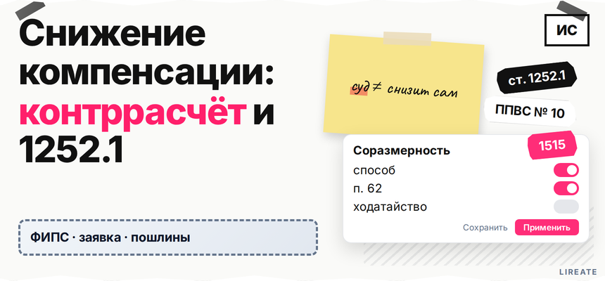
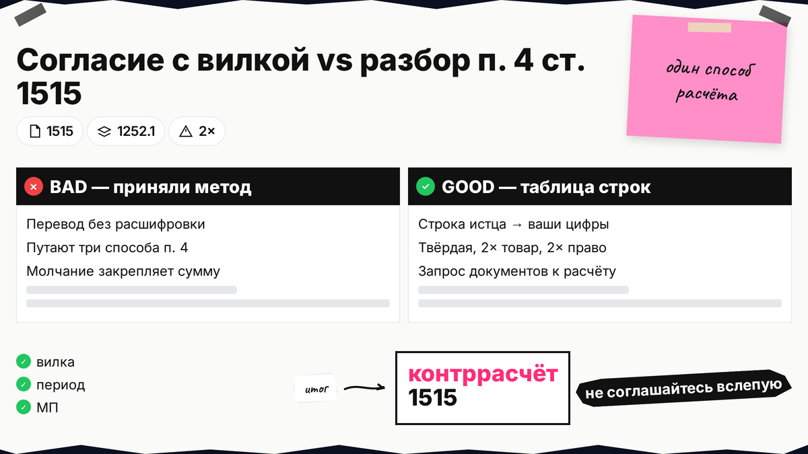
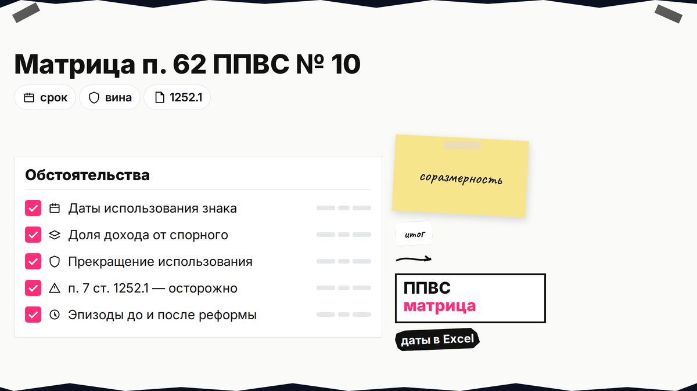
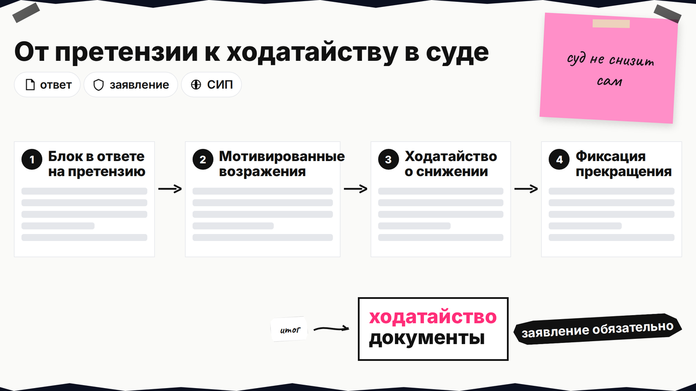

В претензии или иске правообладатель требует не только убрать контент, но и выплатить крупную компенсацию за нарушение исключительных прав. Перевод всей суммы без разбора закрепляет максимум в переписке, а молчание не снижает риск суда. Ниже - как обосновать снижение компенсации: сверить способ расчёта, собрать контррасчёт, опереться на ст. 1252.1 ГК РФ с 04.01.2026, п. 61-62 ППВС № 10 и подготовить блок "Компенсация" в ответе и в суде.

TL;DR / Быстрый инсайт: Правообладатель сам выбирает способ по п. 4 ст. 1515 ГК РФ: твёрдая вилка 10 000-10 000 000 руб., 2× стоимость контрафактных товаров или 2× стоимость права использования. С 04.01.2026 соразмерность и добросовестность - в ст. 1252.1. Оспаривайте цифры контррасчётом и пакетом документов по п. 61-62 ППВС № 10; в суде без заявления о снижении суд часто оставляет сумму истца.
Для ответчика (ИП, ООО, селлер, рекламодатель). Порядок и сроки досудебной претензии — в гайде по ответу на претензию по ТЗ; здесь — только сумма и снижение. Выплаты автору за законное использование - не компенсация: ст. 1286 и смежные нормы. Не заменяет консультацию поверенного.

Исключительное право на товарный знак защищают мерами ст. 1252 и компенсацией ст. 1515. Выпишите из претензии или иска: какой из трёх способов выбран, за какой период, по каким товарам или носителям посчитана сумма.
| Способ по п. 4 ст. 1515 | Что проверить ответчику | Типичный довод о снижении |
|---|---|---|
| Твёрдая компенсация (10 тыс.-10 млн руб. с 04.01.2026) | Обоснована ли сумма выше минимума: объём, срок, грубость | Соразмерность по п. 2 ст. 1252.1 и перечню п. 62 ППВС № 10 |
| 2× стоимость контрафактных товаров | Опт или розница, количество, цена в документах | Свой расчёт цены и объёма; иначе риск отмены "снижения" на апелляции (СИП № С01-894/2024) |
| 2× стоимость права использования | Сопоставимы ли договоры лицензии с вашим фактом | Иные рыночные ставки; при снижении по КС № 40-П - не ниже 1× стоимости права |
Если способ расчёта истца к фактам не подходит, с 04.01.2026 суд может назначить твёрдую компенсацию (п. 3 ст. 1252.1). Делайте: таблицу "строка истца → ваши цифры → источник документа". Не делайте: соглашаться с методом "2× по прайсу для суда", если вы продавали врозницу на МП.

Сначала зафиксируйте даты использования знака на упаковке, в рекламе, в карточке товара. С 04.01.2026 для новых эпизодов опирайтесь на ст. 1252.1: п. 2 - соразмерность с учётом разумности; п. 4 - несколько объектов ИС в одном носителе (не всегда сумма "по каждому" полным минимумом); п. 7 - если нарушитель не знал и не должен был знать при предпринимательской деятельности, суд вправе ограничить вилку (10 000-500 000 руб. твёрдая или 1×-2× по немножимым способам).
П. 61-62 ППВС № 10 обязывают истца мотивировать сумму (кроме случаев минимума) и перечисляют обстоятельства: срок нарушения, вина, субъект, доля дохода от спорного использования, тяжесть последствий для правообладателя. Ответчик доказывает свою картину тем же блоком фактов.
Эпизоды до 04.01.2026: КС № 28-П, п. 64 ППВС № 10 при множественности (если заявлено ответчиком). П. 3 ст. 1252 отменён - для новых дат только 1252.1.
Делайте: матрицу обстоятельств в одной таблице Excel. Не делайте: писать "мы ничего не знали" без доказовательной базы по п. 7 ст. 1252.1.

Контррасчёт - это ваши цифры, а не пожелание "заплатим меньше". К каждой строке истца привяжите документ.
Маршрут: претензия → способ расчёта → матрица п. 62 ППВС → контррасчёт → блок в ответе → ходатайство в суде → фиксация прекращения использования
СИП в деле № С01-894/2024 показал: снижение при методе 2× по товарам без ваших доказательств иной стоимости/количества апелляция может отменить. Делайте: хранить первичку до финала спора. Не делайте: уничтожать карточки товара до копии для юриста.
На досудебной стадии отдельный подпункт "Компенсация" в ответе в досудебной переписке: несогласие с суммой, контррасчёт, оговорка о непризнании вины, перечень приложений. Суд не обязан принять вашу цифру из письма, но переговоры и позиция в деле стартуют с аргументов, а не с молчания.
В иске подайте письменное ходатайство о снижении размера компенсации с тем же пакетом. СИП № С01-2400/2024: снижение ниже минимума по старым механизмам без заявления и доказательств ответчика - не "автоматика" суда (п. 64 ППВС № 10). Для метода 2× по лицензии учитывайте КС № 40-П: снижение не более чем вдвое от расчёта 2×, но не ниже однократной стоимости права.
Подсудность СИП - п. 10 ППВС № 10, не путать с п. 62. Спор о чужом похожем знаке - отдельный трек: конкурент зарегистрировал похожий ТЗ.
Делайте: дублировать контррасчёт и в ответе, и в суде с актуальными датами. Не делайте: признавать размер компенсации "для доброй воли" без согласования с юристом.
Опирайтесь на подтверждённые акты из research, без "у всех снижают до 50 000 руб.".
Делайте: цитировать номера дел в ходатайстве. Не делайте: обещать "суд урежет до минимума". После исхода зафиксируйте прекращение использования (п. 62 ППВС).
Если расчёт истца многократно превышает ваш оборот или способ расчёта явно не совпадает с фактами, имеет смысл передать претензию и контррасчёт на разбор: на Лирейт - услуги по регистрации и защите ИС и консультация по спору; уточнить формат - через страницу контактов. Один пакет документов сэкономит время до подачи ходатайства.
Материал проверен: редакция Лирейт, практика досудебных споров по компенсации за товарный знак и исключительные права.
Достоверность данных: ст. 1252, 1252.1, 1515 ГК РФ (ред. с 04.01.2026), ППВС № 10 п. 61-62, КС № 28-П, 40-П, 57-П и акты СИП из таблицы research сверены с КонсультантПлюс на 19.11.2026. Редакция: проект «Лирейт», IP-споры.
Да: в мотивированном ответе на претензию укажите несогласие, контррасчёт и обстоятельства по п. 62 ППВС № 10. Суд не связан суммой из письма, но переговоры и позиция фиксируются.
Нет. Для снижения по спецправилам (в т.ч. ниже минимума на старых эпизодах) нужны заявление ответчика и доказательства - см. п. 64 ППВС № 10 и СИП № С01-2400/2024.
Введена ст. 1252.1: соразмерность, потолок 10 млн по твёрдой вилке ст. 1515, правила для нескольких ОИС в одном носителе и ограничения для добросовестного нарушителя (п. 7).
Сверьте сопоставимость договоров с вашим фактом (п. 61-62 ППВС). При снижении по КС № 40-П суд не опустится ниже однократной стоимости права использования.
Да, входит в характер и последствия нарушения (п. 62 ППВС). Подтвердите датой снятия с МП, архивом сайта или актом.
Для нарушений после 04.01.2026 смотрите п. 4 ст. 1252.1; для старых сценариев - п. 64 ППВС и КС № 28-П с оговоркой о дате эпизода.
Полный ответ на претензию по товарному знаку и сроки — в гайде L02; эта статья (L76) — только блок компенсации, контррасчёт и снижение в суде. По ТЗ на площадках см. нарушение на маркетплейсе.